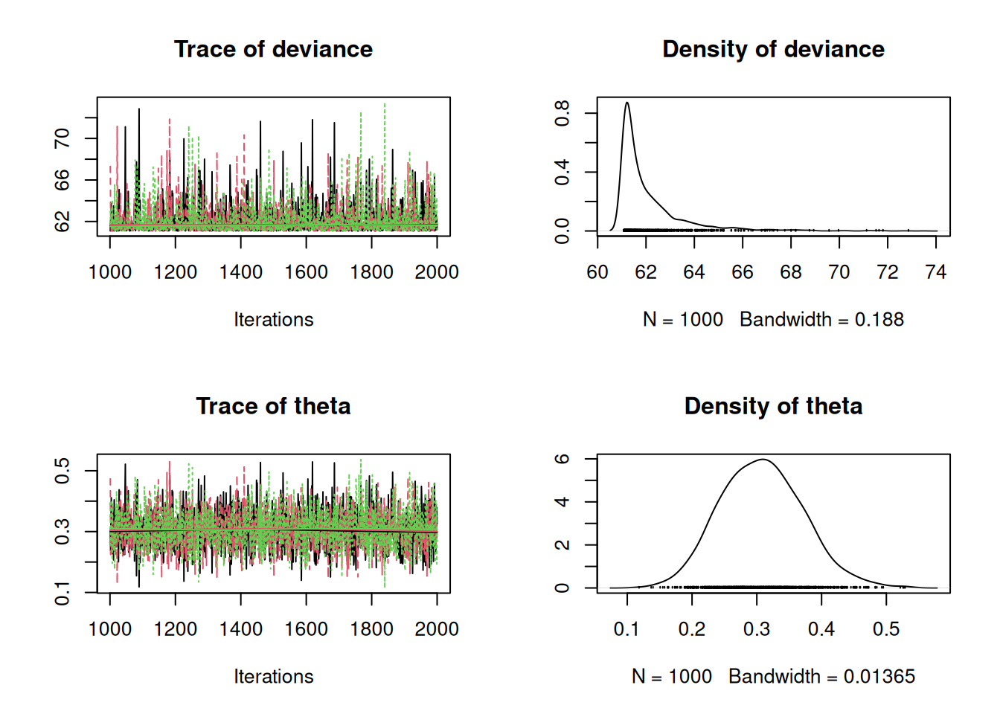
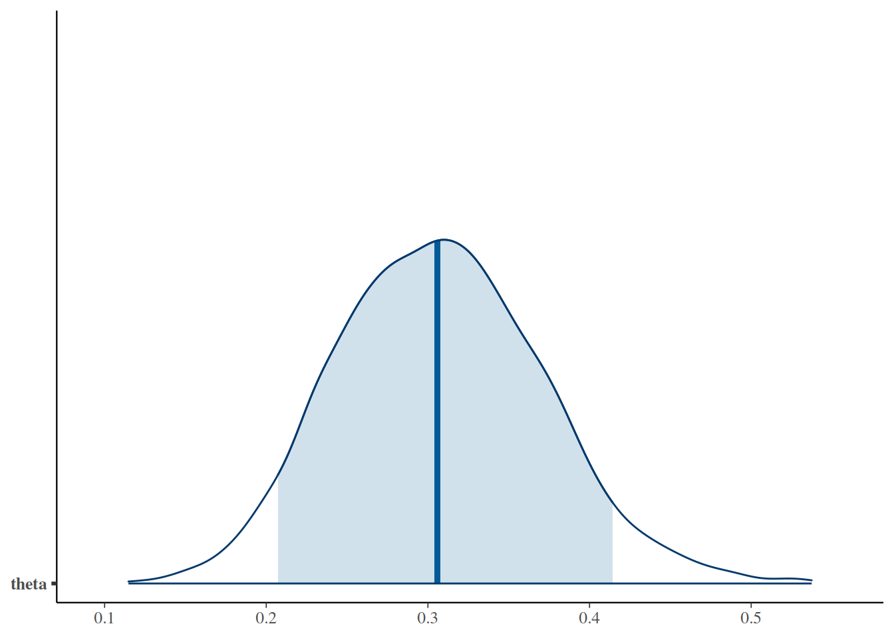
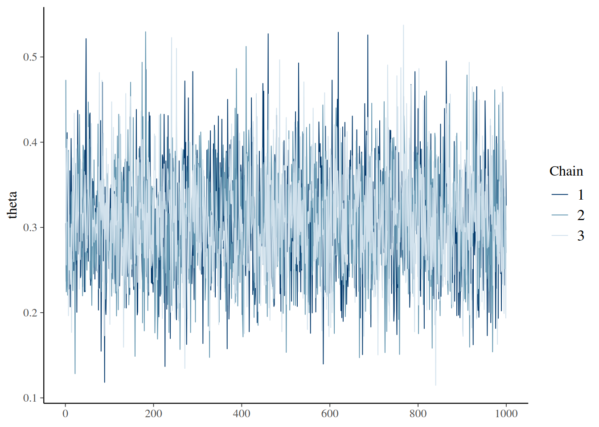
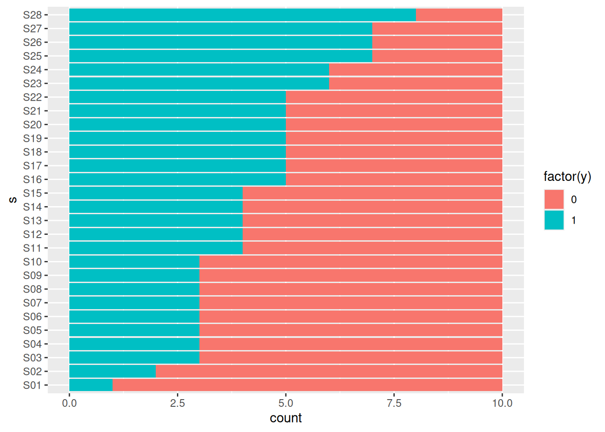
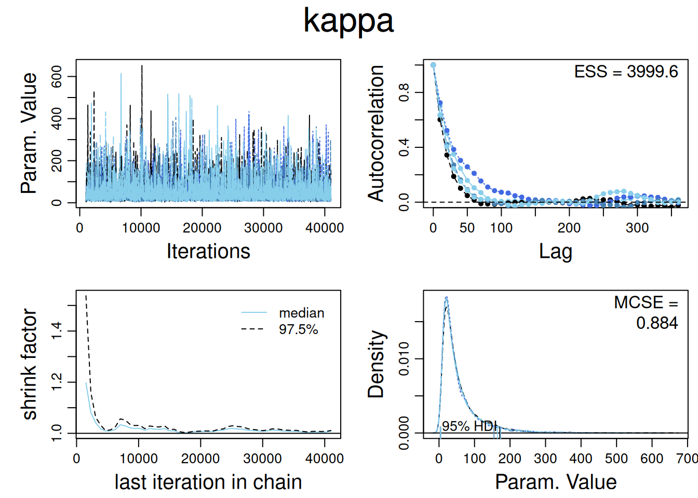
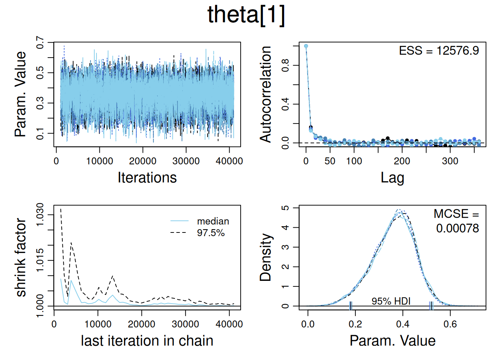
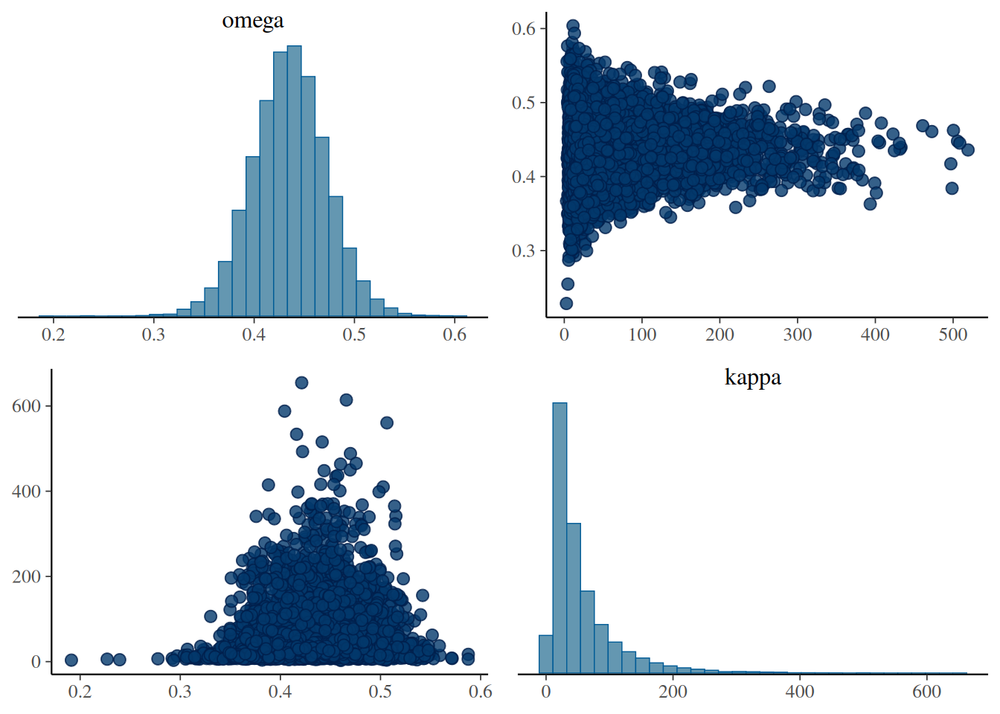
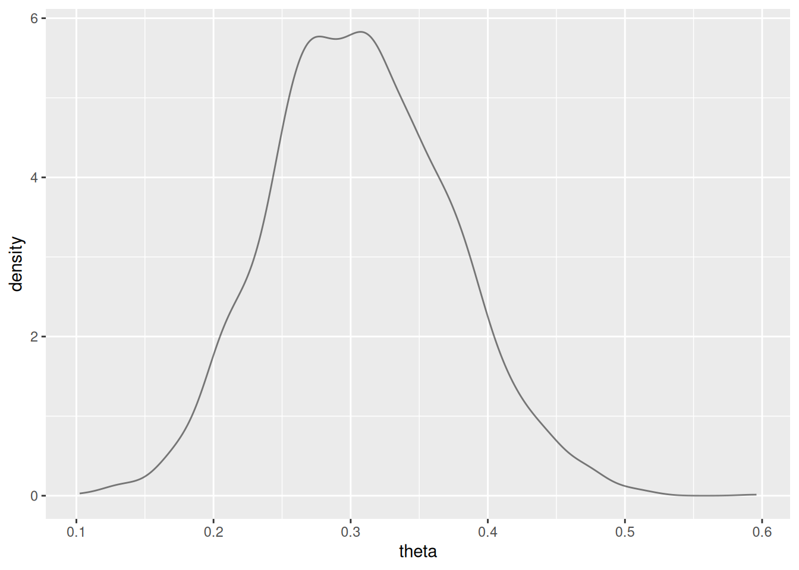

*********************************************************************
Kruschke, J. K. (2015). Doing Bayesian Data Analysis, Second Edition:
A Tutorial with R, JAGS, and Stan. Academic Press / Elsevier.
*********************************************************************
Carga de datos y definición de la estructura de datos para JAGS. Los datos se pueden entender como realizaciones de lanzamientos de una moneda (0: escudo, 1: corona; por ejemplo)
myData =read.csv("DBDA2Eprograms/z15N50.csv") y = myData$y Ntotal =length(y) dataList =list( y = y ,Ntotal = Ntotal )
Definición de modelo Bernoulli(\(\theta\)), con distribución previa sobre \(\theta\) Beta(1,1):
modelString ="model { for ( i in 1:Ntotal ) { y[i] ~ dbern( theta ) } theta ~ dbeta( 1 , 1 )}"writeLines( modelString , con="TEMPmodel.txt" )
Este modelo permite contestar la pregunta de qué tan grande es el sesgo de una moneda con respecto al valor de una moneda justa (\(\theta=1/2\)).
Definición de varios valores iniciales, usando muestreo con reemplazo para estimar un MLE de \(\theta\):
Compiling model graph
Resolving undeclared variables
Allocating nodes
Graph information:
Observed stochastic nodes: 50
Unobserved stochastic nodes: 1
Total graph size: 53
Initializing model
Resumen:
bern_jags
Inference for Bugs model at "/tmp/RtmptFdHKr/model651267e6394d.txt", fit using jags,
3 chains, each with 2000 iterations (first 1000 discarded)
n.sims = 3000 iterations saved
mu.vect sd.vect 2.5% 25% 50% 75% 97.5% Rhat n.eff
theta 0.308 0.064 0.193 0.262 0.306 0.350 0.440 1.001 3000
deviance 62.076 1.430 61.087 61.194 61.546 62.372 66.074 1.001 3000
For each parameter, n.eff is a crude measure of effective sample size,
and Rhat is the potential scale reduction factor (at convergence, Rhat=1).
DIC info (using the rule, pD = var(deviance)/2)
pD = 1.0 and DIC = 63.1
DIC is an estimate of expected predictive error (lower deviance is better).
Gráficos alternativos usando el paquete bayesplot (compatible con ggplot2):
library(bayesplot)
Primero transformamos el output de JAGS a coda:
bern_mcmc <-as.mcmc(bern_jags)plot(bern_mcmc)

Gráfico de la distribución posterior:
mcmc_areas( bern_mcmc, pars =c("theta"), prob =0.90)

Traceplots combinados:
mcmc_trace(bern_mcmc, pars ="theta")

Traceplots separados:
library(tidyverse)library(ggformula)mcmc_trace(bern_mcmc, pars ="theta") %>%gf_facet_grid(chain ~ .) %>%gf_refine(scale_color_viridis_d())
ESS mean median mode hdiMass hdiLow hdiHigh compVal
theta 10002 0.3077605 0.305555 0.3018493 0.95 0.1866602 0.4311935 NA
pGtCompVal ROPElow ROPEhigh pLtROPE pInROPE pGtROPE
theta NA NA NA NA NA NA
o bien se puede usar el paquete de github CalvinBayes (https://github.com/CalvinData/CalvinBayes) para hacer los mismos gráficos con el objeto obtenido en R2jags:
library(CalvinBayes)diag_mcmc(bern_mcmc, par ="theta")
Compiling model graph
Resolving undeclared variables
Allocating nodes
Graph information:
Observed stochastic nodes: 50
Unobserved stochastic nodes: 1
Total graph size: 53
Initializing model
bern_jags2
Inference for Bugs model at "/tmp/RtmptFdHKr/model6512152e0c66.txt", fit using jags,
4 chains, each with 5000 iterations (first 1000 discarded)
n.sims = 16000 iterations saved
mu.vect sd.vect 2.5% 25% 50% 75% 97.5% Rhat n.eff
theta 0.307 0.063 0.192 0.263 0.305 0.349 0.438 1.001 14000
deviance 62.055 1.388 61.088 61.186 61.527 62.355 66.079 1.002 3400
For each parameter, n.eff is a crude measure of effective sample size,
and Rhat is the potential scale reduction factor (at convergence, Rhat=1).
DIC info (using the rule, pD = var(deviance)/2)
pD = 1.0 and DIC = 63.0
DIC is an estimate of expected predictive error (lower deviance is better).
Y podemos correr también modelos con distintos valores iniciales:
set.seed(2345)bern_jags3 <-jags(data =list(y = z15N50$y, N =nrow(z15N50)),model.file = bern_model,parameters.to.save =c("theta"),# start each chain by sampling from the priorinits =function() list(theta =rbeta(1, 3, 3)) )
Compiling model graph
Resolving undeclared variables
Allocating nodes
Graph information:
Observed stochastic nodes: 50
Unobserved stochastic nodes: 1
Total graph size: 53
Initializing model
bern_jags4 <-jags(data =list(y = z15N50$y, N =nrow(z15N50)),model.file = bern_model,parameters.to.save =c("theta"),# choose specific starting point for each chaininits =list(list(theta =0.5), list(theta =0.7), list(theta =0.9) ) )
Compiling model graph
Resolving undeclared variables
Allocating nodes
Graph information:
Observed stochastic nodes: 50
Unobserved stochastic nodes: 1
Total graph size: 53
Initializing model
mcmc_trace(as.mcmc(bern_jags4), pars ="theta")
5.2 Sesgos de dos monedas
Dos individuos (Reginald y Tony) tiran cada uno una moneda. Se tiene los resultados de los intentos de cada individuo:
library(mosaic)head(z6N8z2N7)
# A tibble: 6 × 2
y s
<dbl> <chr>
1 1 Reginald
2 0 Reginald
3 1 Reginald
4 1 Reginald
5 1 Reginald
6 1 Reginald
Cambiamos los nombres de las variables. Además, noten que las proporciones de 0s y 1s obtenidas por cada individuo son muy distintas entre sí, por lo tanto en el modelo sería conveniente usar una probabilidad de ocurrencia de 1s distinta por individuo.
Target <- z6N8z2N7 %>%rename(hit = y, subject = s)df_stats(hit ~ subject, data = Target, props, attempts = length)
response subject prop_0 prop_1 attempts
1 hit Reginald 0.2500000 0.7500000 8
2 hit Tony 0.7142857 0.2857143 7
El modelo en este caso considera la observación anterior:
bern2_model <-function() {for (i in1:Nobs) { hit[i] ~dbern(theta[subject[i]]) }for (s in1:Nsub) { theta[s] ~dbeta(2, 2) }}
mcmc_pairs(bern2_mcmc, pars =c("theta[1]", "theta[2]"))
mcmc_combo(bern2_mcmc)
Estamos interesados en analizar la diferencia entre \(\theta_1\) (Reginald) y \(\theta_2\) (Tony), en particular a través de la diferencia \(\theta_1-\theta_2\). Note que a través de esta diferencia, es posible medir la hipótesis nula \(H_0: \theta_1> \theta_2\):
gf_density( ~(theta.1- theta.2), data =posterior(bern2_jags))
Para medir \(H_0\), estimamos la probabilidad posterior de \(H_0\):
sum(post2$dif>0)/3000
[1] 0.9323333
Por lo tanto la probabilidad de que \(H_0\) sea cierta es 0.9323 y la probabilidad de rechazar tal hipótesis (o bien aceptar \(H_1: \theta_1<\theta_2\)) es 6.77%.
5.3 Ejemplo de Modelación Jerárquica (sección 9.2.4, Kruschke)
Contexto: El Toque Terapéutico (TT) es una práctica de enfermería que se dice trata condiciones médicas manipulando un “campo de energía humano” con las manos de los practicantes. Este estudio tuvo como objetivo probar si los practicantes de TT pueden percibir este campo de energía. Veintiún practicantes con 1 a 27 años de experiencia en TT fueron evaluados en condiciones cegadas. Se les pidió que identificaran cuál de sus manos estaba más cerca de la mano del investigador, que se colocaba al azar mediante el lanzamiento de una moneda. Catorce practicantes fueron evaluados 10 veces cada uno, y siete fueron evaluados 20 veces cada uno. La capacidad de los practicantes para identificar correctamente la posición de la mano del investigador se comparó con una tasa de éxito del 50% esperada por casualidad.
Pregunta de Investigación: ¿Las tasas de acierto para los practicantes será mayor al 50%?
Carga de datos:
head(TherapeuticTouch, 3)
# A tibble: 3 × 2
y s
<dbl> <chr>
1 1 S01
2 0 S01
3 0 S01
Las tasas de acierto empíricas para cada individuo se pueden visualizar de la siguiente forma:
gf_bar(s ~ ., data = TherapeuticTouch, fill =~factor(y))

de donde es interesante observar la diferencia entre tasas de acierto entre individuos (que en este caso está ordenado del que tiene menos al que tiene más acierto). Es por esto que un modelo con tasa de acierto variable por individuos tendría sentido.
Recuerden que el modelo jerárquico tendría la forma:
Ajustamos el modelo con un número de mayor de cadenas, con mayor tamaño de muestra posterior y con thinning. Noten que ejecutamos el modelo paralelizando el proceso (1 core por cadena)
$posterior
ESS mean median mode
var1 13197.07 0.4351743 0.4355163 0.4375461
$hdi
prob lo hi
1 0.95 0.3597935 0.5071227
$comparison
value P(< comp. val.) P(> comp. val.)
1 0.5 0.9596 0.0404
De donde se concluye que el 96% de la población de practicantes no tienen una tasa de acierto general mayor al 50%. Este análisis se puede realizar para la tasa de acierto del sujeto #28:
$posterior
ESS mean median mode
var1 12746.09 0.5248268 0.5141253 0.4994144
$hdi
prob lo hi
1 0.95 0.3582065 0.717917
$comparison
value P(< comp. val.) P(> comp. val.)
1 0.5 0.43435 0.56565
Diagnósticos del parámetro de precisión de la tasa de acierto individual:
diag_mcmc(touch_mcmc, par ="kappa")

Gráfico de dispersión entre las muestras posteriores de \(K\) y \(\omega\):
mcmc_pairs(touch_mcmc, pars =c("omega", "kappa"))
Muestreo a partir de la previa:
TouchData_pre <-list(Ntotal =0,Nsubj =length(unique(TherapeuticTouch$s)),# must convert subjects to sequence 1:Nsubjs =as.numeric(factor(TherapeuticTouch$s)))touch_jags_pre <-jags.parallel(data = TouchData_pre,model = touch_model,parameters.to.save =c("theta", "kappa", "omega"),n.burnin =1000,n.iter =41000,n.chains =5,n.thin =10,jags.seed =54321,DIC = F )
Diagnósticos:
diag_mcmc(touch_mcmc, par ="theta[1]")mcmc_pairs(touch_mcmc, pars =c("omega", "kappa"))


5.4 Introducción a STAN
Carga de librería:
library(rstan)rstan_options(auto_write =TRUE)
Para ilustrar el uso de STAN, se va a ajustar un modelo Bernoulli a datos sintéticos. El modelo está definido en el archivo moneda.stan en el repositorio de estas notas.
TRANSLATING MODEL '' FROM Stan CODE TO C++ CODE NOW.
modelo_moneda
S4 class stanmodel 'anon_model' coded as follows:
//
// This Stan program defines a simple model, with a
// vector of values 'y' modeled as normally distributed
// with mean 'mu' and standard deviation 'sigma'.
//
// Learn more about model development with Stan at:
//
// http://mc-stan.org/users/interfaces/rstan.html
// https://github.com/stan-dev/rstan/wiki/RStan-Getting-Started
//
// The input data is a vector 'y' of length 'N'.
data {
int<lower=0> N; // N is a non-negative integer
int y[N]; // y is a length-N vector of integers
}
// The parameters accepted by the model. Our model
// accepts two parameters 'mu' and 'sigma'.
parameters {
real<lower=0,upper=1> theta; // theta is between 0 and 1
}
// The model to be estimated. We model the output
// 'y' to be normally distributed with mean 'mu'
// and standard deviation 'sigma'.
model {
theta ~ beta (1,1);
y ~ bernoulli(theta);
}
Ajuste del modelo en condiciones similares a las que JAGS trabaja por default:
simple_stanfit <-sampling( modelo_moneda, data =list(N =50,y =c(rep(1, 15), rep(0, 35)) ),chains =3, # default is 4iter =1000, # default is 2000warmup =200# default is half of iter )
Inference for Stan model: anon_model.
3 chains, each with iter=1000; warmup=200; thin=1;
post-warmup draws per chain=800, total post-warmup draws=2400.
mean se_mean sd 2.5% 25% 50% 75% 97.5% n_eff Rhat
theta 0.31 0.00 0.07 0.19 0.26 0.31 0.35 0.44 742 1
lp__ -32.64 0.03 0.80 -34.90 -32.79 -32.34 -32.16 -32.10 949 1
Samples were drawn using NUTS(diag_e) at Mon Jun 17 22:22:04 2024.
For each parameter, n_eff is a crude measure of effective sample size,
and Rhat is the potential scale reduction factor on split chains (at
convergence, Rhat=1).
Algunos diagnósticos:
gf_dens(~theta, data =posterior(simple_stanfit))

simple_mcmc <-as.matrix(simple_stanfit)mcmc_areas(as.mcmc.list(simple_stanfit), prob =0.9, pars ="theta")